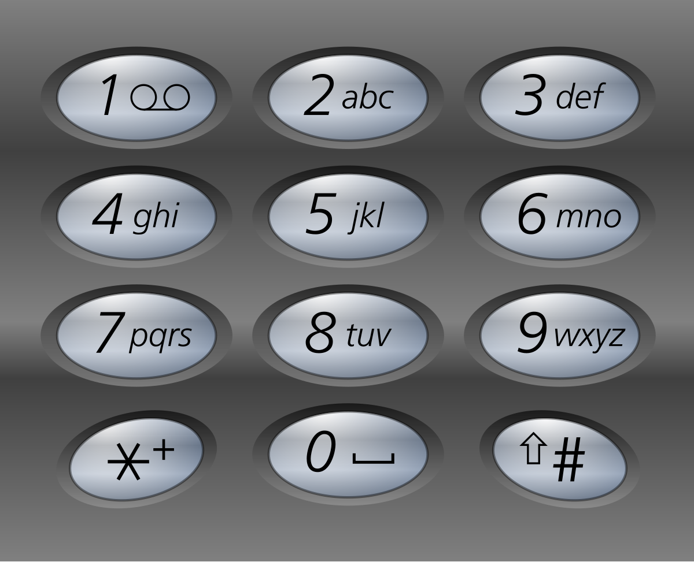

17. 电话号码的字母组合
题目与约束
给定一个仅包含数字 2-9 的字符串，返回所有它能表示的字母组合。答案可以按 任意顺序 返回。
给出数字到字母的映射如下（与电话按键相同）。注意 1 不对应任何字母。

示例 1：
输入：digits = "23"
输出：["ad","ae","af","bd","be","bf","cd","ce","cf"]
示例 2：
输入：digits = "2"
输出：["a","b","c"]
提示：
1 <= digits.length <= 4digits[i]是范围['2', '9']的一个数字。
核心不变量
递归层数对应电话号码下标。
完整推导
思路推导
-
直觉与痛点（多重嵌套循环的破产）：
假如输入的数字是
"23"，你可能会写两个for循环：外层遍历'a','b','c'，内层遍历'd','e','f'。痛点：如果输入的是
"23456"呢？你需要写 5 层嵌套的for循环！如果输入的长度是不固定的，你根本无法用普通的for循环来写代码。处理这种“未知层数的嵌套循环”，就是回溯算法最拿手的好戏。 -
破局思路（构建横向与纵向的坐标系）：
回溯算法的本质是遍历一棵多叉树。
- 树的深度（纵向）：由输入的数字字符串长度决定。比如输入
"23"，那这棵树只有两层。我们用一个index变量来记录当前正在处理第几个数字。 - 树的宽度（横向）：由当前数字对应的字母个数决定。比如遇到数字
'2'，宽度就是 3（a, b, c）；遇到数字'9'，宽度就是 4（w, x, y, z）。
- 树的深度（纵向）：由输入的数字字符串长度决定。比如输入
-
逻辑推演（三步走战略）：
- 查字典：建立一个数组或哈希表，把
'2'到'9'映射到具体的字符串上。 - 做选择 -> 下一层 -> 撤销选择：抓取当前数字对应的字母集。选一个字母装进口袋，然后
index + 1进入下一层（处理下一个数字）。等下一层处理完退回来时，把刚才装进口袋的字母掏出来，换下一个字母继续试。 - 收获结果：当口袋里的字母数量等于输入数字的长度时，说明所有的按键都按了一遍，保存结果并返回。
Java 实现（满分 StringBuilder 优化版）
C++ 实现
实现来源：代码随想录（programmercarl.com）
const string letterMap[10] = { "", // 0 "", // 1 "abc", // 2 "def", // 3 "ghi", // 4 "jkl", // 5 "mno", // 6 "pqrs", // 7 "tuv", // 8 "wxyz", // 9 };Python 实现
实现来源：代码随想录（programmercarl.com）
class Solution: def __init__(self): self.letterMap = [ "", # 0 "", # 1 "abc", # 2 "def", # 3 "ghi", # 4 "jkl", # 5 "mno", # 6 "pqrs", # 7 "tuv", # 8 "wxyz" # 9 ] self.result = [] self.s = ""Go 实现
实现来源：代码随想录（programmercarl.com）
var ( m []string path []byte res []string ) func letterCombinations(digits string) []string { m = []string{"abc", "def", "ghi", "jkl", "mno", "pqrs", "tuv", "wxyz"} path, res = make([]byte, 0), make([]string, 0) if digits == "" { return res } dfs(digits, 0) return res } func dfs(digits string, start int) { if len(path) == len(digits) { //终止条件，字符串长度等于digits的长度 tmp := string(path) res = append(res, tmp) return } digit := int(digits[start] - '0') // 将index指向的数字转为int（确定下一个数字） str := m[digit-2] // 取数字对应的字符集（注意和map中的对应） for j := 0; j < len(str); j++ { path = append(path, str[j]) dfs(digits, start+1) path = path[:len(path)-1] } }C 实现
实现来源：代码随想录（programmercarl.com）
char* path; int pathTop; char** result; int resultTop; char* letterMap[10] = {"", //0 "", //1 "abc", //2 "def", //3 "ghi", //4 "jkl", //5 "mno", //6 "pqrs", //7 "tuv", //8 "wxyz", //9 }; void backTracking(char* digits, int index) { //若当前下标等于digits数组长度 if(index == strlen(digits)) { //复制digits数组，因为最后要多存储一个0，所以数组长度要+1 char* tempString = (char*)malloc(sizeof(char) * strlen(digits) + 1); int j; for(j = 0; j < strlen(digits); j++) { tempString[j] = path[j]; } //char数组最后要以0结尾 tempString[strlen(digits)] = 0; result[resultTop++] = tempString; return ; } //将字符数字转换为真的数字 int digit = digits[index] - '0'; //找到letterMap中对应的字符串 char* letters = letterMap[digit]; int i; for(i = 0; i < strlen(letters); i++) { path[pathTop++] = letters[i]; //递归，处理下一层数字 backTracking(digits, index+1); pathTop--; } } - 查字典：建立一个数组或哈希表，把
import java.util.ArrayList;
import java.util.List;
class Solution {
// 1. 建立九宫格字典（利用数组的索引巧妙对应数字）
// index 0 和 1 留空，对应真实的按键 '0' 和 '1'（虽然题目说只包含 2-9，但这样写更严谨规范）
private final String[] MAPPING = {
"", "", "abc", "def", "ghi", "jkl", "mno", "pqrs", "tuv", "wxyz"
};
// 全局结果集
private List<String> res = new ArrayList<>();
public List<String> letterCombinations(String digits) {
// 🌟 致命边界检查：如果输入是空字符串 ""，应该返回空列表 []，而不是 [""]
if (digits == null || digits.length() == 0) {
return res;
}
// 准备一个“口袋”用来临时装字母
StringBuilder path = new StringBuilder();
// 从第 0 个数字开始回溯
backtrack(digits, 0, path);
return res;
}
private void backtrack(String digits, int index, StringBuilder path) {
// 1. 终止条件：当走过的深度（index）等于按键个数时，说明一条路走到头了
if (index == digits.length()) {
res.add(path.toString());
return;
}
// 2. 拿到当前这一层需要处理的数字字符
char digit = digits.charAt(index);
// 将字符 '2' 转换成真正的整数 2（利用 ASCII 码相减）
String letters = MAPPING[digit - '0'];
// 3. 遍历当前数字对应的所有字母（横向宽度）
for (int i = 0; i < letters.length(); i++) {
// --- 做选择 ---
path.append(letters.charAt(i));
// --- 带着这个选择，进入下一层处理下一个数字 ---
backtrack(digits, index + 1, path);
// --- 撤销选择（回溯！） ---
// 把刚刚加进去的最后一个字母删掉，腾出位置给 for 循环里的下一个字母
path.deleteCharAt(path.length() - 1);
}
}
}
复杂度
- 时间复杂度：O(3N × 4M)。其中 N 是对应 3 个字母的数字个数（如 2,3,4,5,6,8），M 是对应 4 个字母的数字个数（如 7,9）。最坏情况下，我们要把所有的组合都生成一遍。
- 空间复杂度：O(N + M)。空间消耗主要在递归调用栈的深度以及
StringBuilder的长度，它们都等于输入字符串的长度。
- 极度高频坑点：
""(空字符串) 的特殊处理
- 如果不加
if (digits.length() == 0) return res;，当输入为""时，代码会直接进入backtrack。由于index == digits.length() == 0，它会触发终止条件，往res里塞入一个空字符串，最终返回[""]。 - 但题目要求输入
""时返回[]（里面什么都没有）。这个微小的差别是这道题错误率最高的地方。
- 面试代码品味大考问：“为什么要把
path定义成StringBuilder，如果我传String会怎样？”
-
低手回答：传
String也能做，代码还更短。Java
// 传 String 的写法，连撤销选择的代码都省了，看起来很爽：
backtrack(digits, index + 1, path + letters.charAt(i));
-
高手抢答：在 Java 中，
String是不可变对象。如果你在递归里写path + "a"，Java 底层会重新开辟一块内存，把老字符串拷过去，再拼上新字母。在巨大的回溯树中，这会疯狂产生无数个String垃圾对象，导致频繁触发 GC（垃圾回收），速度极慢且极其浪费内存！ -
使用
StringBuilder并且配合deleteCharAt进行撤销操作，意味着整个递归过程自始至终只复用了同一块内存！这才是真正的工业级代码素养。笔记中的本地图片未随迁；本题的可视化演示位于页尾「交互演示」部分。